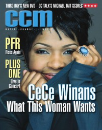

CMnexus: Contemporary Christian culture, music, and media.
|
|
CeCe WinansOn the cover|  | July 2001
CCM | Media coverage:- Apr 1990 in CCM "In The News: Winans Clan Bag Three of Five Gospel Grammys"
- May 1990 in Today's Christian Woman "The Gospel Truth", by Rebecca K Grosenbach
- Jan 1992 in Campus Life "Christian Musicians In The Mainstream", by Jim Long
- Feb 1995 in Campus Life "Just Kickin' Back With Bebe and CeCe Winans", by Jim Long
- Sep 1995 in Today's Christian Woman "One on One With CeCe Winans", by Ramona Cramer Tucker
- Jan 1996 in CCM "Relaxed In His Presence", by Jim Long
- Mar 1996 in CCM "Erasing Racism", by Todd Hafer
- Jul 1996 in CCM "The Other Side of the Tracks"
- Nov 1997 in CCM "On The Beat: Give Peace A Change", by Ray Pierce
- Apr 1998 in CCM "Woman of the '90s", by Joan Brasher
- Dec 1998 in Aspire "CeCe's Place", by Jeanette Thomason
- May 1999 in CCM "In Concert: Sports Arena, San Diego, CA", by Dave Urbanski
- Nov 1999 in CCM "On The Beat: Deck the Halls", by Shari MacDonald
- Dec 1999 in CCM "What You CeCe Is What You Get", by Melissa Riddle
- Jan 2000 in Church Musician Today "Behind CeCe's Smile", by Betty McLellan Jones
- Jun 2000 in CCM "Global Impact"
- Aug 2000 in Charisma "The First Family of Gospel", by Valerie G. Lowe
- Sep 2000 in Today's Christian Woman "First Person: CeCe Winans"
- Jul 2001 in CCM "Aim High", by Thom Granger
- Jan 2002 in Today's Christian Woman "Pop Quiz: CeCe Winans"
- Feb 2002 in CCM "On Tour: Aire Crown Theatre, Chicago, Illinois", by Andy Argyrakis
- Nov 2003 in CCM "5 Questions With: CeCe Winans"
- May 2004 in CCM "Behind The Music With", by Michael Nolan
- Sep 2004 in Charisma "Soul Sister", by Valerie G. Lowe
- Oct 2005 in CCM "Pure Gold", by Jay Swartzendruber
- Oct 2005 in CCM "Up Where She Belongs", by Jay Swartzendruber
- Apr 2006 in CCM "!Connections", by Beau Black
- Aug 2006 in CCM "Lead Me On", by Kristi Henson
- Jul 2007 in Charisma "News: Ministry Helps Teen Girls Confront Real-Life Issues", by LaVenia Jean LaVelle
- Apr 2008 in CCM "CeCe Winans", by Nia Allen
- Dec 2010 in CCM Digital "The Fringe: CeCe Winans", by Andrew Greer
- 1 Mar 2017 in CCM Digital "Falling Forward", by Andrew Greer
Albums & reviews:1995: Alone In His Presence1998: His Gift1998: Everlasting Love1999: Alabaster Box2001: CeCe Winans2003: Throne Room2005: Purified2008: Thy Kingdom Come2008: Pure Worship2010: Songs of Emotional Healing2017: Let Them Fall In Love2018: Something's Happening! Award Summary (Nominations / Wins)Dove Awards1989 Dove Awards1990 Dove Awards1996 Dove Awards1997 Dove Awards- Female Vocalist
- Contemporary Gospel Recorded Song: "Take Me Back"
1998 Dove Awards1999 Dove Awards- Contemporary Gospel Album: Everlasting Love
2000 Dove Awards- Contemporary Gospel Album: Alabaster Box
2001 Dove Awards- Contemporary Gospel Recorded Song: "Alabaster Box"
2002 Dove Awards- Female Vocalist
- Contemporary Gospel Album: CeCe Winans
- Contemporary Gospel Recorded Song: "Anybody Wanna Pray?"
2003 Dove Awards- Contemporary Gospel Recorded Song: "For Love Alone"
2004 Dove Awards2006 Dove Awards2009 Dove Awards- Contemporary Gospel Album: Thy Kingdom Come
- Contemporary Gospel Recorded Song: "Waging War"
2017 Dove Awards2018 Dove Awards2019 Dove AwardsGrammy Awards1989 Grammy Awards- Best Gospel Vocal Performance, Female: "Don't Cry"
1995 Grammy Awards- Best Contemporary Soul Gospel Album: Alone In His Presence
1998 Grammy Awards- Best Contemporary Soul Gospel Album: Everlasting Love
1999 Grammy Awards- Best Contemporary Soul Gospel Album: His Gift
2000 Grammy Awards- Best Contemporary Soul Gospel Album: Alabaster Box
2001 Grammy Awards- Best Pop/Contemporary Gospel Album: CeCe Winans
2005 Grammy Awards- Best Gospel Performance: "Pray"
- Best Contemporary Soul Gospel Album: Purified
2007 Grammy Awards- Best Gospel Performance: "He Set My Life To Music"
2008 Grammy Awards- Best Gospel Performance: "Waging War"
- Best Pop/Contemporary Gospel Album: Thy Kingdom Come
2017 Grammy Awards- Best Gospel Album: Let Them Fall In Love
- Best Gospel Performance/Song: "Never Have To Be Alone"
Books about CeCe Winans- "Bebe and CeCe Winans (and BeBe Winans [solo] and CeCe Winans [solo])" in The Encyclopedia of Contemporary Christian Music (Mark Allan Powell, 2002)
|